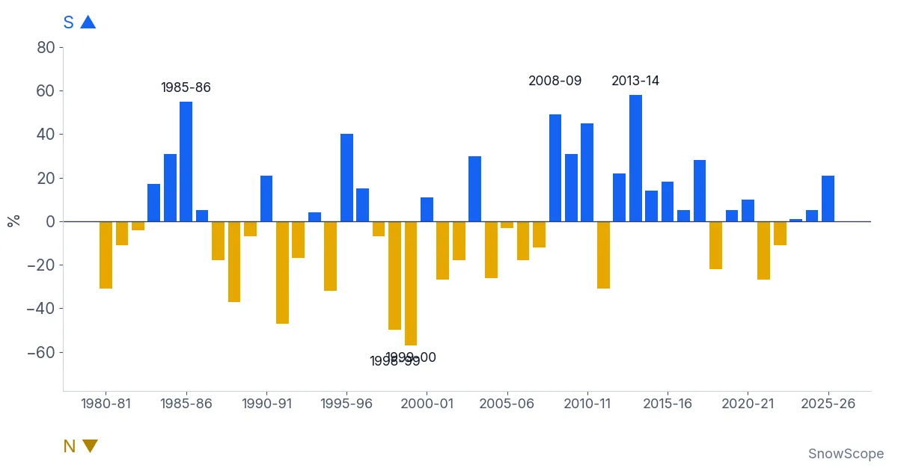

Trois façons de skier Cortina d'Ampezzo, et quand la neige des Dolomites est la meilleure
Cortina d'Ampezzo, ville à 1 224 m dans les Dolomites, a accueilli les Jeux olympiques d'hiver en 1956 puis, avec Milan, en 2026. Son domaine se divise en trois secteurs, et chacun convient à un skieur différent. Voici trois façons de passer vos journées, puis ce que dit notre historique de neige sur le bon moment pour venir.
Consultez les prévisions neige en temps réel pour Cortina d'Ampezzo sur l'application SnowScopeHauteurs de neige, alertes poudreuse et carte 3D, gratuitement.
Façon 1 : la montagne des coureurs, la Tofana
Tofana-Socrepes est le versant grand et raide de Cortina. Sa piste Olympia delle Tofane a accueilli les épreuves féminines de ski alpin des Jeux de 2026 et les championnats du monde de 2021, et le Tofana Schuss est l'endroit où les coureurs dépassent 130 km/h. Un téléphérique, la Freccia nel Cielo (« flèche dans le ciel »), monte de Cortina presque au sommet de la Tofana di Mezzo, 3 244 m. Choisissez ce versant si vous êtes un bon skieur en quête de longues descentes rapides.

Façon 2 : le secteur tranquille, Faloria-Cristallo
Faloria-Cristallo est le deuxième des trois secteurs de Cortina, qui comptent ensemble 120 km de pistes et sont reliés par bus, remontées et pistes. Il convient aux skieurs moyens qui veulent de grandes vues et un rythme tranquille. Partout dans la vallée, les pentes ensoleillées ramollissent dès la fin de matinée : skiez-les après les pistes froides à l'ombre, et tôt par douceur printanière.
Façon 3 : le tour panoramique, Cinque Torri-Lagazuoi
Le troisième secteur, Cinque Torri-Lagazuoi, est celui des skieurs qui viennent autant pour les paysages que pour les pistes. Le Lagazuoi est relié au domaine de la Sella Ronda, avec 400 km de pistes de plus, et Cortina est l'une des 12 stations du réseau Dolomiti Superski. Prévoyez une journée entière et regardez d'abord la météo : les hauteurs sont exposées au vent.
Quand la neige est la meilleure
Notre historique couvre 46 hivers passés (1980-81 à 2025-26) à trois altitudes du domaine de Cortina, en valeurs de modèle pour une zone corrigées de l'altitude : 859 m, le point le plus bas du secteur que nous suivons, 1 799 m et 2 739 m. La neige naturelle y est modeste. À 1 799 m, la neige la plus épaisse d'un hiver typique est d'environ 75 cm, avec environ 30 cm en décembre, 47 cm en janvier, 53 cm en février et 55 cm en mars ; aucune semaine n'a au moins 50 cm neuf hivers sur 10, et même la meilleure, fin mars, n'y arrive qu'environ 63 % des hivers.
Plus haut, le tableau s'améliore : à 2 739 m, un hiver typique culmine vers 208 cm, avec environ 114 cm en février, 132 cm en mars et 158 cm en avril, et au moins 50 cm pendant 16 semaines neuf hivers sur 10. La neige naturelle la plus fiable se trouve donc en haut de février à avril. En bas, à 859 m, le maximum typique n'est que d'environ 21 cm.
Une série d'hivers secs
Le haut du domaine a perdu plus que la plupart. À 2 739 m, le maximum médian était d'environ 226 cm sur nos quinze premiers hivers depuis 1980-81 et d'environ 172 cm sur les quinze derniers, jusqu'en 2025-26. L'hiver dernier, 2025-26, a été maigre, avec un maximum d'environ 136 cm en haut et d'environ 59 cm à mi-pente. Attendez-vous à ce que les pistes basses dépendent de la neige de culture, et vérifiez ce qui tourne sur le site officiel avant de réserver.
Y aller et sécurité
La gare la plus proche est Calalzo-Pieve di Cadore-Cortina, à 35 km au sud. L'aéroport de Venise Marco Polo est à 148 km et celui de Trévise à 138 km. Avant le hors-piste, lisez le bulletin d'avalanche des Dolomites de Vénétie (l'AINEVA recense les bulletins régionaux, dont celui d'Arabba), et rappelez-vous que de la neige sur notre carte ne veut pas dire qu'une remontée tourne.
Conseils aux skieurs
- Bons skieurs : la Tofana le matin, avant la foule et tant que la neige est ferme.
- Pour la meilleure neige naturelle, visez le haut du domaine de février à avril.
- Hors-piste : lisez le bulletin d'avalanche régional (AINEVA, Vénétie) et partez avec un guide.
- Accès : train jusqu'à Calalzo puis car, ou avion jusqu'à Venise ou Trévise.
Références et crédits
- Wikipedia, 'Cortina d'Ampezzo', retrieved 7 November 2026. en.wikipedia.org/wiki/Cortina_d%27Ampezzo
- Wikipedia, 'Tofane', retrieved 7 November 2026. en.wikipedia.org/wiki/Tofane
- AINEVA, the Italian inter-regional snow and avalanche association: links to the regional avalanche bulletins, including Veneto (Arabba). www.aineva.it/
À propos de ces chiffres
Chiffres de neige : historique SnowScope, 46 hivers passés (1980-81 à 2025-26) à trois altitudes de la station, un modèle du passé corrigé de l'altitude (une estimation pour une zone, pas les bulletins de la station). Remontées, pistes et accès : les sources ci-dessous, vérifiées à la date indiquée.
Bulletins d'avalanche officiels: AINEVA
Citer ce bulletin
Pour la recherche, l'enseignement ou la presse : chiffres et graphiques réutilisables librement sous CC BY 4.0 avec cette citation.
SnowScope (2026), Trois façons de skier Cortina d'Ampezzo, et quand la neige des Dolomites est la meilleure, https://snowscope.app/blog/fr/2026/11/cortina-d-ampezzo-three-ways-to-ski-dolomites-snow.html, consulté le 2026-11-09
SnowScope (Atlas Labs). (2026, November 9). Trois façons de skier Cortina d'Ampezzo, et quand la neige des Dolomites est la meilleure. SnowScope snow reports. https://snowscope.app/blog/fr/2026/11/cortina-d-ampezzo-three-ways-to-ski-dolomites-snow.html
BibTeX
@misc{snowscope2026cortinadampezzothreeways,
author = {{SnowScope (Atlas Labs)}},
title = {Trois façons de skier Cortina d'Ampezzo, et quand la neige des Dolomites est la meilleure},
year = {2026},
month = nov,
howpublished = {\url{https://snowscope.app/blog/fr/2026/11/cortina-d-ampezzo-three-ways-to-ski-dolomites-snow.html}},
note = {Published 2026-11-09 11:38 UTC; accessed 2026-11-09}
}· CC BY 4.0 · Méthodes, données et outils →
Cortina d'Ampezzo : neige et température selon l'altitude, cet hiver vs l'hiver dernier (outils) →
Suivre Cortina d'Ampezzo
Gratuit : un message quand la neige arrive, et la météo chaque matin.
Autres bulletins neige

Notre série de 46 hivers dans les Alpes, 108 points de 667 à 3 872 m : moins de jours de neige partout, nettement à 81 %. Ce qui a changé et pourquoi.

Sur 46 hivers, les stations du versant italien et des Alpes du Sud françaises ont connu 24 fois un hiver relativement plus généreux que le versant nord. Le graphique, les grandes années et la météo qui les explique.

Le manteau neigeux des Écrins aux Alpes-Maritimes et au Piémont va-t-il se remplir comme d'habitude en décembre 2026 ? La prévision saisonnière européenne et notre carte, massif par massif.